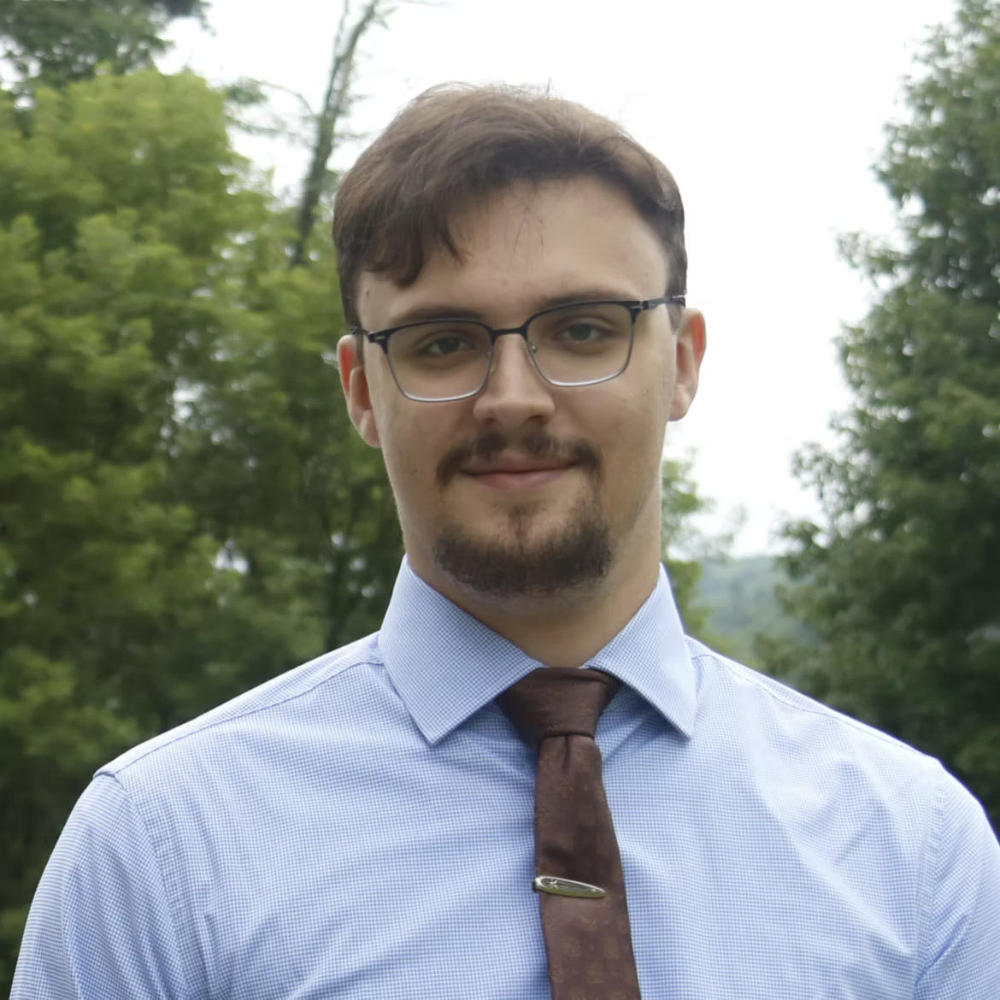

About Me
I am a current senior at Tufts University, where I study History, Political Science, and Ancient World Studies. I have primarily centered my studies around American government and politics, while also taking substantial coursework in world histories and cultures and international/comparative politics.
In early 2025, I joined The Tufts Tribune, a campus start-up paper focused on creating a diverse media environment and bringing a pluralistic range of voices to the table for open discussion and debate. As a staff writer, I learned the investigative process and contributed a few times to our opinions section. I quickly fell in love with reporting and chose to pursue journalism professionally.
In Spring of 2026, I was promoted to a staff editor amidst much of our editorial staff having traveled abroad. While continuing to write investigative work, I was now directing the writing process and working with editorial staff to refine articles into the final product. I learned AP style standards and learned the ins-and-outs of managing a newspaper.
That summer, I worked as a freelance municipal reporter for my local paper The River Reporter. I was able to put what I learned in our club to the test at the professional level. I reported and wrote short-form articles on a 700+ acre data center application in rural Pennsylvania, gaining on-the-fly interviewing and writing skills.
I am now the editor for the Campus Life section at The Tufts Tribune, a new section for short-form news coverage of the Tufts and Medford/Somerville area. I am taking the writing, reporting, and management skills I developed over the last three years and using them to expand our paper’s content.
